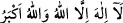
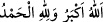

Yine rivâyete göre İbrahim (a.s.) koçu kurban edince, Cebrâil (a.s.) “
dedi. Kurbanlık İsmail (a.s.) “ dedi. Bu sefer İbrahim (a.s.) “ dedi. Bu tekbir bundan dolayı sünnet oldu. Bilinmelidir ki kurban üçtür.
Birincisi Hâbil’in kurbanı, ikincisi İbrahim (a.s.)’ın kurbanı, üçüncüsü ise koç
sûretinde ölümün kurban edilmesidir. Yine fidye de üçtür: 1. Hâbil’in kurbanının İsmail
(a.s.)’a fidye olarak gönderilmesi, 2. Kıyamette bütün mü’minlere fidye verilmesi ki,
her mü’mine fidye olarak bir kâfir verilecektir. Mü’min o kâfiri alnından, perçeminden
tutup cehenneme atacaktır. 3. Allah Teâlâ’nın ebedi hayat için ölümü fidye yapması.
Allah Teâlâ ölümü koç sûretinde sırat üzerinde kesecek ve cehenneme atacaktır. Tâbi ki
bu durum cennet ehlinin cennette ölümsüz, daimi ve ebedi olarak kalacaklarının bir
müjdesi olacaktır. Cehennem ehli için de ebedi olarak azapta kalmaları tam bir
azarlama ve tekdir olacaktır. İşte bütün bunlar tevhid mertebelerine delâlet etmektedir:
Hâbil’in kurbanı ef’âl tevhidine, Yahya (a.s.)’ın kurbanı sıfât tevhidine, İbrahim
(a.s.)’ın kurbanı da zât tevhidine işaret eder. Zira İbrahim (a.s.)’ın kurbanı zât tevhidinin
bir tecellisidir ve Allah Teâlâ’nın zâtında fena-i küllîdir. İbrahim (a.s.)’ın kurbanı diğer
bütün kurbanlardan daha büyüktür. Onun fidyesi de diğer bütün fidyelerden tamdır.
Denilir ki hacıya kurban kesmek vacip olunca, artık kurbanı kesmeden bu sorumluluk
ondan düşmez. İbrahim (a.s.)’a da oğlu İsmail (a.s.)’ı kurban etmesi vacip olunca bu
görev yerine getirilmediği sürece teklif asla sakıt olmaz. İşte Allah Teâlâ İsmail
(a.s.)’ın yerine böyle yüce bir peygamberi kurtarmak için fidye olarak büyük bir koç
göndermiştir. Bu şekilde İbrahim (a.s.)’ın zimmetine vacip olan kurban işi
gerçekleşmiştir. Zira kurban vacip olduktan sonra kesilmeden hüküm kalkmaz. Bundan
dolayı bir kimse evladını kurban etmeyi adasa Hanefi mezhebine göre bu kimse bir koç
ya da koyun kurban etmelidir. Sonuçta İbrahim (a.s.)’ın oğlu İsmail (a.s.)’ın sureti koç
suretinde oldu; bu suret cennete sevk edilecek ve oraya istediği surette girecektir. Koç
sureti kurban edildi ve İbrahim (a.s.)’ın oğlu koç suretine büründü. İşte doğan çocuk
için kesilen ve herkesin kendi akîka kurbanı ile rehin tutulduğu meşhur akîka kurbanının
sebebi budur. Malum akîka kurbanı Hanefilere göre mübah yahut mendup; Şâfiî, Mâliki
ve Hanbeli mezheplerine göre sünnet; Zâhiri mezhebine göre ise vaciptir. Şâyet Allah
Teâlâ burada İsmail (a.s.)’e fidye olarak koç göndermeseydi insanların oğullarından
birini kesmeleri kıyamete kadar devam eden bir sünnet olacaktı.
Konunun izahı şudur: Teslim olma ve boyun eğmede insan ile koç arasındaki
münasebetten dolayı bu koç rüyada İbrahim (a.s.)’ın oğlu İsmail (a.s.) suretinde
göründü. Allah Teâlâ’nın muradı İsmail (a.s.)’ın kurban edilmesi değil; bu koçun kurban
edilmesiydi. Rüyada görünen Allah katında İsmail (a.s.)’ın suretine bürünmüş olan bu
koçtur. Başka bir şey değildir. Hak Teâlâ Hazretleri İsmail (a.s.)’ın yerine bu koçu
büyük bir kurban olarak gönderdi. Mesela ilim de rüyada süt suretinde görünür. Yani
rüyada süt görmek, süt içmek, sütten faydalanmak ilim olarak yorumlanır. Bu durumda
hayal hazretinde görünen sütün kendisi değildir. Bunun hakikati ise şudur: Şayet İbrahim